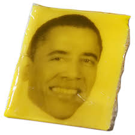
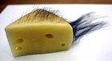

My Recipe In Spanish:
Durante todo el proceso hay que esterilizar todos los elementos que vayan a entrar en contacto con la leche, la cuajada o el queso. Se pueden hervir o usar un desinfectante apto para alimentación.
Ponemos nuestra leche en una cacerola grande, con tapa. Removiendo constantemente se calienta la leche hasta alcanzar una temperatura de 35ºC. No debemos excederla porque los cultivos se morirían y si se trabaja con leche de cabra no deberemos sobrepasar los 29º. Diluir la dosis de cloruro cálcico en una cucharada sopera de agua y añadirlo a la leche revolviendo suavemente. Tomar las dosis de fermentos, diluirlas en un poco de leche e incorporarlas al resto.
Se tapa la cacerola y se coloca durante una o dos horas en un lugar caliente entre 22ºC y 30ºC donde esté resguardada la leche de sacudidas y de posibles suciedades (polvo, insectos).
Tomar la dosis de cuajo, diluirla en un poco de leche de la cazuela y agregarla al resto removiendo cuidadosamente. Dejar reposar durante 1 o 2 horas, o hasta que esté cuajada y lista para desuerar.
Sabremos que la cuajada está lista para desuerar cuando al introducir un cuchillo y levantemos la punta hacia arriba se produzca una grieta en la superficie. Esto significará que la leche se ha coagulado y por lo tanto la cuajada está a punto.
Ahora, se corta la cuajada con una lira si tenemos una o con un cuchillo. Intentamos cortar dados de cuajada de aproximadamente un cm de lado. Dejamos reposar unos minutos y podemos pasar al siguiente paso, que es el escaldado que cconsiste en calentar la cuajada a 40 °C. A la vez que se remueve cuidadosa y constantemente la cuajada, se vierte lentamente tanta cantidad de agua a 50-60 °C como haga falta para que la temperatura dentro de la cacerola llegue a ser de 40 °C. (Si se desea un queso más seco trabajar a temperaturas hasta 40 ºC, si se desea un queso más húmedo trabajar a 28ºC). La cacerola se mantiene a esta temperatura durante 30 minutos, removiendo con mucha frecuencia la cuajada (lenta y suavemente) para que los granos de cuajada no se fundan unos con otros. Durante esta media hora, se mantiene la temperatura de 40 °C (o a 28º).
Una vez escaldada, la cuajada se saca cuidadosamente de la cacerola y se va depositando sobre un colador forrado con una gasa de quesero limpia y húmeda. El traspaso de la cacerola al colador se debe realizar cuidadosamente para evitar que la pasta se rompa y se pierda en forma de «polvo de queso». Estos pequeñísimos fragmentos de cuajada taponarían los poros del lienzo, dificultando innecesariamente el dre¬naje del suero. Una vez que se ha depositado toda la cuajada sobre el lienzo, se agarra éste por dos picos y se mueve hacia arriba y hacia abajo para que salga el suero con mayor rapidez. A los 3-4 minutos se habrá eliminado bastante suero.
Se introduce entonces la cuajada en el molde y se aprieta con fuerza sobre ella. Es conveniente, que el molde y el paño que la reviste hayan sido desinfectados con un producto adecuado o que hayan sido hervidos en agua
El llenado de los moldes se ha de llevar a cabo de una forma rápida para evitar, en la posible, que la cuajada se enfríe. Con el fin de evitar que queden huecos vacíos en el interior, conviene presionar con un cucharón; sobre todo en los bordes internos del molde. Una vez llenado el molde y habiendo presionado la cuajada, se dobla el paño (a ser posible sin arrugas) sobre la pasta y se coloca la tapa del molde.
Tapamos el molde y podemos proceder al prensado. La duración y la presión (el peso) de prensado varían según si se quiere producir un queso duro o semiduro. Sólo se pueden indicar aquí unos valores aproximados de prensado: Se comienza sometiendo el queso a una presión de 3 kg. Si se comienza con una presión excesiva, se provoca un endurecimiento exagerado de la corteza del queso; y esto dificulta la posterior eliminación del suero que hay en el interior de la masa.
Transcurridos entre 45 minutos y 2 horas, se le da la vuelta al queso en el molde y quita la tela en ambas categorías de queso: duros y semiduros. Los prensados posteriores serán diferentes según el tipo de queso que se quiera elaborar. IMPORTANTE: Para que el queso se compacte correctamente, el proceso de prensado debe realizarse a una temperatura de interior (20-22 °C).
Quesos semiduros: Una vez que se ha volteado el queso, se somete a otro prensado. Ahora se ejercerá una presión de 6 kg. Según cual sea el grado de dureza que se espera que tenga el queso, el prensado tendrá una duración de 6 a 12 horas. En este tiempo se le da la vuelta al queso 2 ó 3 veces.
Quesos duros: Tras el pre-prensado y el volteado, se someten los quesos a una presión de 15 kg. Según el grado de humedad de la cuajada y la firmeza que se desea, se prensará de 24 a 48 horas.
En los prensados de larga duración es conveniente darles la vuelta a los quesos cada 8-10 horas para facilitar la exudación del suero.
Cuando se ha acabado de prensar el queso, se introduce entre 2 y 5 horas en una salmuera al 20 % (en un vaso de medida se echan 200 gramos de sal y después se introduce agua fría hasta alcanzar la marca de 1 litro). La temperatura de la salmuera debe rondar los 15 °C.
Se saca el queso de la salmuera y se pone a secar sobre una superficie limpia que permita también la aireación de la cara inferior del queso (una rejilla por ej.). Inspeccionamos el queso y si tuviera grietas o recovecos en los que puedan crecer mohos, las tapamos o los eliminamos con un cuchillo.
Para alcanzar el grado óptimo de sus cualidades, los quesos duros y semiduros han de madurar durante varias semanas. Para ello se mantendrán en un lugar fresco (idealmente alrededor de 15º) y con un alto grado de humedad. Por ejemplo, se pueden madurar en una cazuela o palangana grande en la que hemos metido un cuenco con agua, sin llegar a tapar del todo el conjunto para que la humedad no sea excesiva.
El queso se ha de controlar minuciosamente durante su maduración. Las dos primeras semanas se ha de voltear cada 2 días; y al menor indicio de presencia de mohos hay que raspar la corteza con un paño empapado en salmuera concentrada. Es importantísimo evitar que se desarrollen en la superficie del queso mohos grises, negros o rojizos. A partir de la tercera semana será suficiente con voltear los quesos 1 ó 2 veces a la semana (y por supuesto eliminar los mohos si apareciesen).
My Life Portfolio:
Former President of the United States
I like fellow mammals

Degree in "Peluquería"